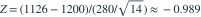

正态总体标准差已知为 280。n=14，样本均值 1126。检验  对
对  。给定
。给定  ，p 值约为？
，p 值约为？
对 。给定 ，p 值约为？- A0.1613
- B0.8387
- C0.3226
- D0.0500
我已思考，展开答案与解析
正确答案：A
- 边界下

，左侧 p 值为 。
易错提醒先明确分布参数、独立性和统计量的定义，再进行计算。
资料校订：改用规范的复合原假设，并按给定近似值统一数值精度。
用户提供练手卷 · 原第 10 题；题目 PDF 第 2 页
单选改编；题干与选项已重新编排